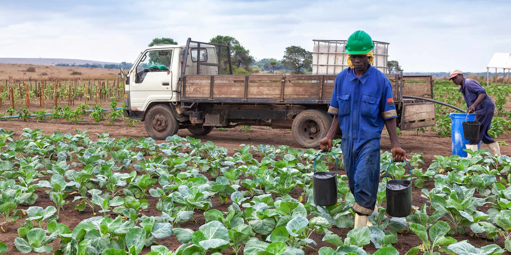
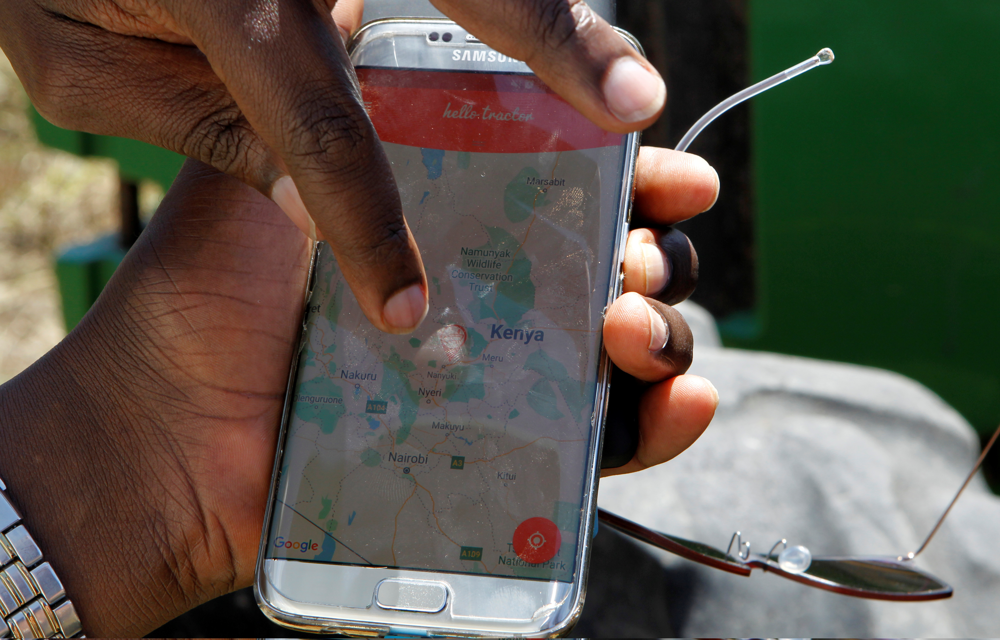

AgroKuia é a primeira plataforma de inteligência artificial agrícola construída com dados locais das 18 províncias. Diagnóstico de doenças, previsão meteorológica e assistência técnica — tudo no telemóvel, mesmo sem internet.

A AgroKuia não é uma adaptação de uma app estrangeira. Foi construída de raiz com dados das 18 províncias, pragas locais, solos angolanos e as culturas que alimentam o nosso país. Somos a primeira e única startup AgriTech angolana com base de dados 100% local.
Angola importa mais de 50% dos alimentos que consome, apesar de ter 58 milhões de hectares de terra arável. Os pequenos agricultores — 90% do sector — enfrentam barreiras que limitam a sua produtividade.
Doenças e pragas destroem até 40% das colheitas por falta de diagnóstico atempado. Fonte: FAO/WFP Angola, 2024.
A maioria dos agricultores não tem acesso a extensionistas rurais. Angola tem menos de 1 técnico por 5.000 agricultores.
Angola gasta mais de 5 mil milhões USD/ano em importações alimentares. Dinheiro que podia ficar no país. Fonte: Banco Mundial, 2024.
Cada funcionalidade da AgroKuia foi desenhada para resolver um problema específico dos agricultores angolanos, com dados e contexto local.
Tire uma foto da planta doente. A IA identifica a doença em segundos e recomenda o tratamento correcto para o contexto angolano. Funciona offline.
Resolve: 40% de perdasDados meteorológicos por província para planear sementeiras, regas e colheitas. Alertas de chuva, seca e temperatura extrema.
Resolve: Planeamento cegoBase de dados com culturas, pragas, doenças, fertilizantes e técnicas específicas de Angola. Com leitura por voz para agricultores com dificuldades de leitura.
Resolve: 85% sem assistênciaPreços de mercado actualizados e ligação directa a fornecedores de insumos. O agricultor compra o que precisa sem intermediários.
Resolve: Acesso a mercadoDesenhada para ser usada por qualquer agricultor, mesmo com pouca experiência tecnológica ou dificuldades de leitura.
Tire uma foto da sua planta e a inteligência artificial identifica doenças e pragas em segundos, com recomendações de tratamento personalizadas para o contexto angolano. Funciona completamente offline — sem necessidade de internet.

Todos os diagnósticos e recomendações são lidos em voz alta em Português. Acessível para agricultores com dificuldades de leitura.
Gestão de gado com informações sobre saúde animal, vacinação e melhores práticas adaptadas à realidade angolana.
Disponível para Android, iOS e Web. Acesso a partir de qualquer dispositivo, em qualquer lugar de Angola.
Painel de dados em tempo real para cooperativas, ONGs e governo. Mapa epidemiológico de pragas e doenças por região.
Desenhado para ser usado por qualquer agricultor, mesmo sem experiência tecnológica.
Disponível no Google Play Store. Instalação gratuita, sem necessidade de conta.
Tire uma foto da planta ou animal que quer analisar. A IA faz o resto.
Diagnóstico instantâneo com tratamento recomendado. Lido em voz alta se preferir.
Toda a base de dados está no telemóvel. Funciona 100% offline nas zonas rurais.
A AgroKuia tem o potencial de transformar a agricultura angolana e contribuir para a segurança alimentar do país.
Fundador & CEO — AgroKuia / AMAMBELE, LDA
A AgroKuia / AMAMBELE, LDA opera com princípios claros que guiam cada decisão, cada linha de código e cada parceria.
Dados angolanos, problemas angolanos, soluções angolanas. Cada funcionalidade é validada no terreno, com agricultores reais, em províncias reais.
O lucro é consequência do impacto. Cada agricultor que perde menos colheita é uma família que come melhor. Medimos sucesso em vidas transformadas.
Usamos inteligência artificial não por ser tendência, mas porque resolve problemas reais. Tecnologia de ponta ao serviço de quem mais precisa.
Emails corporativos dedicados para cada departamento. Website funcional. Dados verificáveis. Operamos com a transparência que o sector agrícola merece.
Abertos a negociações com instituições, cooperativas, ONGs e investidores em todo o território angolano. Parcerias que criam valor para todos.
Crescemos com base em resultados reais, não em promessas. Cada expansão é validada por dados e impacto mensurável no terreno.
A AgroKuia procura parceiros estratégicos para escalar o impacto. Oferecemos contratos personalizados, integração técnica e dados em tempo real para instituições.
Parcerias com INAPEM, AIPEX, MINAGRIF e governos provinciais para programas de extensão rural digital e certificação de startups.
Oportunidade de investir num mercado de $3.2B com impacto social directo. Contacte investors@agrokuia.com para o nosso pitch deck.
Integração com cooperativas agrícolas como a UNACA e organizações de desenvolvimento rural. Licenciamento institucional disponível.
A AgroKuia opera com estrutura empresarial profissional. Cada departamento tem um canal de comunicação dedicado para garantir respostas rápidas e especializadas.
Sim. Toda a base de dados de doenças, pragas, culturas e tratamentos está armazenada localmente no telemóvel. O diagnóstico por IA funciona 100% offline. Apenas funcionalidades como previsão meteorológica e cotações de mercado necessitam de ligação à internet.
Sim, a versão base é completamente gratuita. Inclui diagnóstico de doenças, biblioteca agrícola e leitura por voz. Funcionalidades premium para instituições e empresas estão disponíveis mediante licenciamento.
A base de dados inclui as principais culturas angolanas: milho, mandioca, feijão, batata-doce, banana, tomate, cebola, amendoim, soja, arroz, entre outras. A lista é actualizada regularmente com novas culturas e doenças.
Contacte-nos através de contact@agrokuia.com ou investors@agrokuia.com. Estamos abertos a parcerias com instituições governamentais, cooperativas, ONGs, empresas agrícolas e investidores em todo o território angolano.
A base de dados cobre as 18 províncias de Angola. O projecto piloto está a decorrer em Benguela, com expansão planeada para Huambo, Huíla e Bié em 2026-2027.
A AgroKuia é desenvolvida pela AMAMBELE, LDA — empresa angolana em processo de constituição formal. A empresa opera com estrutura profissional, emails corporativos dedicados por departamento, website funcional e presença activa no LinkedIn.
Descarregue a AgroKuia gratuitamente e junte-se à revolução AgriTech angolana. A primeira app de inteligência artificial agrícola feita em Angola, para Angola.